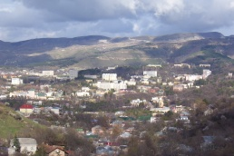

Страницы авторов "Тёмного леса"
Пишите нам! temnyjles@narod.ru

Два века у богатырского ключа (летопись города Кисловодска)
Курортные города России как объект управления в конце XIX - начале XX века
Северный Кавказ от Адыгеи до Дагестана - путеводитель (фрагменты)
Северный Кавказ (Географический и историко-этнографический очерк)
Неакадемические сочинения (статьи, стихи)
Город-курорт как объект управления.
Родословные тайны профессора Яновского.
Закавказский дневник (Азербайджан, Грузия и Армения в августе 2013 г.)
Туркестанский дневник (Самарканд и Бухара в январе 2014 г.)
Вячеслав Яновский, Станислав Саблин. видео "Кисловодск: курортные руины былой империи"
Написать Вячеславу Яновскому: vyacheslavyanovsky@yandex.ru
Последнее изменение страницы 9 Oct 2018